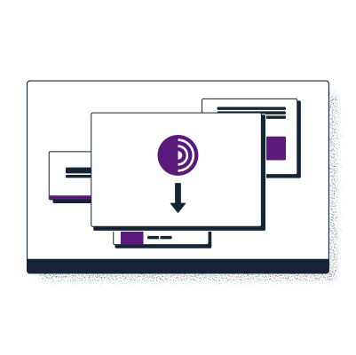
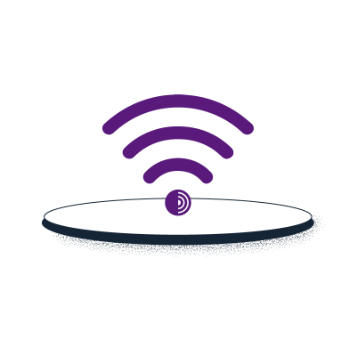
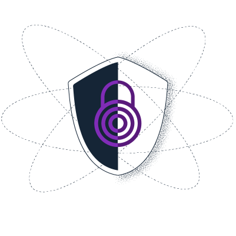

Dicas para contornar o bloqueio da rede Tor na internet brasileira
Você não consegue acessar algum site, como Facebook, Twitter, ou qualquer rede social? Está recebendo mesnsagens de erro ou bloqueio de DNS? Provavelmente o estado brasileiro proibiu o acesso ao site que você quer.
Esta página ensina como você pode contornar a censura.
escapar da censura com a rede tor
A rede Tor oferece uma maneira de navegar na Internet de forma anônima, ajudando as pessoas a evitar tanto a censura quanto a vigilância. O Tor Browser é como qualquer outro navegador que você usa - Chrome, Firefox, Safari, Yandex - exceto que ao invés de expor todo seu comportamento de navegação ao seu provedor de serviços de Internet e a todos os outros que bisbilhotam o seu tráfego de rede, ele esconde o seu tráfego criptografando-o e permitindo que ele pule através de três relays(nós) aleatórios de execução voluntária (pessoas comuns, ativistas, jornalistas, etc). Este processo esconde quem você é, onde você está e para onde vai (ou seja, qual site você está visitando).
O Tor é usado por defensores dos direitos humanos, ativistas e pessoas de todo o mundo que precisam escapar da censura e da vigilância. Para saber mais sobre o Tor e como ele funciona, visite o Manual do navegador Tor.
1) Baixe o navegador Tor
A maneira mais segura e simples de baixar o Tor Browser é a partir do site oficial do Projeto Tor. Para Windows, Android, Linux ou IOS você pode baixar o Tor Browser a partir do link abaixo:
https://www.torproject.org/download/
*Problemas para acessar o site do projeto Tor? Pode ser que o estado brasileiro tenha proibido o acesso ao website, veja o que fazer:
Pode haver momentos em que você não pode acessar o website do Projeto Tor: por exemplo, ele pode ser bloqueado em sua rede. Se isso acontecer, você pode usar um dos métodos alternativos de download listados abaixo.
Espelhos oficiais
Você pode tentar baixar o Tor Browser de um dos espelhos oficiais, seja por meio de um dos espelhos oficiais:
http://tor.calyxinstitute.org/
GetTor
Se mesmo os sites espelho estiverem bloqueados, você pode solicitar o recebimento do Tor Browser da GetTor. GetTor é um serviço que responde automaticamente às mensagens com links para a última versão do Tor Browser, hospedado em vários locais, como Dropbox, Google Drive e GitHub:
Passo 1: Envie um e-mail para gettor@torproject.org, e no corpo da mensagem simplesmente escreva "windows", "osx", ou "linux" (sem aspas), dependendo de seu sistema operacional. Você também pode adicionar um código de idioma para obter o Tor Browser em um idioma diferente do inglês. Por exemplo, para obter links para baixar o Tor Browser em chinês (China) para Windows, envie um e-mail para gettor@torproject.org com as palavras "windows zh_CN" nele.
Passo 2: GetTor responderá com um e-mail contendo links do qual você pode baixar o pacote Tor Browser, a assinatura criptográfica (necessária para verificar o download), a impressão digital da chave usada para fazer a assinatura e o checksum do pacote. Você pode escolher entre software "32-bit" ou "64-bit": isto depende do modelo do computador que você está usando.
Você também pode acessar a documentação e outros recursos usando os seguintes espelhos:
https://support.tor.invidious.site/
https://tb-manual.tor.invidious.site/
https://blog.tor.invidious.site/
2) Conectar a rede Tor
Quando você executar o Tor Browser pela primeira vez, você verá a janela Connect to Tor. Isto lhe oferece a opção de conectar-se diretamente à rede Tor, ou de configurar o Navegador Tor para sua conexão. Há uma caixa de seleção que pergunta se você sempre quer se conectar automaticamente à rede Tor, se a rede não estiver bloqueada em seu país, marque a caixa.
Você já deve ser capaz de começar a navegar na web usando o Tor Browser logo após a execução do programa, e clicando no botão "Connect" se você estiver usando-o pela primeira vez.
*Problemas para se conectar a rede Tor?
O acesso direto à rede Tor pode às vezes ser bloqueado por seu provedor de serviços de Internet ou por um governo. O Navegador Tor inclui algumas ferramentas de evasão para contornar estes bloqueios. Em tais cenários, basta simplesmente configurar seu navegador para se conectar através de uma ponte(bridge). As pontes são simplesmente relays(nós) que são privados e mais difíceis de bloquear.
Instruções sobre como ativar as pontes para o PC/Computador:
Você pode usar uma ponte no Navegador Tor para computador, indo até: Configurações > Conexão > Pontes > Selecione uma ponte embutida. A partir do dia 22 de dezembro de 2021, as pontes diretamente no Tor Browser estão bloqueadas na Rússia.
Portanto, os leitores precisam solicitar uma ponte através de uma das seguintes maneiras:
Solicitando uma ponte de dentro do Navegador Tor no computador: Configurações > Conexão > Pontes > Solicite uma ponte ao torproject.org > Solucione o CAPTCHA
Enviando "/bridges" para um canal dedicado no Telegram @GetBridgesBot e depois adicionando o endereço da ponte recebido manualmente através de copiar e colar no Tor Browser: Configurações > Conexão > Pontes > Digite um endereço de ponte que você já conhece
Visite https://bridges.torproject.org/ e siga as instruções
Solicitar uma ponte via e-mail: "bridges@torproject.org" de um endereço de e-mail Gmail ou Riseup; e depois adicionar o endereço da ponte recebido manualmente através de copiar e colar no Tor Browser: Configurações > Conexão > Pontes > Digite um endereço de ponte que você já conhece
Conectando-se através do Snowflake de dentro do Tor Browser: Configurações > Conexão > Pontes > Selecione uma ponte interna > Snowflake
Instruções sobre como ativar as pontes para o Android:
Os leitores podem usar uma ponte no Android indo para: Ícone de configurações > Configurar ponte > Use uma ponte.
No caso de pontes agrupadas diretamente no Tor Browser estarem bloqueadas, os leitores precisam solicitar uma ponte através de uma das seguintes maneiras:
Enviando "/bridges" para um canal dedicado no Telegram @GetBridgesBot e depois adicionando as linhas de pontes recebidas manualmente através de copiar e colar no Tor Browser: Configurar ponte > Fornecer uma ponte que eu conheço
Visite https://bridges.torproject.org/ e siga as instruções
Solicitar uma ponte via e-mail: bridges@torproject.org de um endereço de e-mail Gmail ou Riseup; e depois adicionar as linhas de pontes recebidas manualmente através de copiar e colar no Tor Browser: Configurar ponte > Fornecer uma ponte que eu conheça
Conectando-se através do Snowflake de dentro do Tor Browser: Configurar ponte > Snowflake
Instruções sobre como ativar as pontes para iOS:
Os leitores podem usar uma ponte no iOS, indo em: Ícone do Tor ao visualizar um site > Configuração de ponte.
No caso de pontes diretamente no Navegador Tor estarem bloqueadas, você pode solicitar uma ponte por uma das seguintes maneiras:
Enviando "/bridges" para um canal dedicado no Telegram @GetBridgesBot e depois adicionando as linhas de pontes recebidas manualmente através de copiar e colar no Tor Browser: Configurar ponte > Fornecer uma ponte que eu conheço
Visite https://bridges.torproject.org/ e siga as instruções
Solicitar uma ponte via e-mail: bridges@torproject.org de um endereço de e-mail Gmail ou Riseup; e depois adicionar as linhas de pontes recebidas manualmente através de copiar e colar no Tor Browser: Configurar ponte > Fornecer uma ponte que eu conheça
Conectando-se através do Snowflake de dentro do Tor Browser: Configurar ponte > Snowflake
3) Acesso ao serviço Onion
Os serviços onion (anteriormente conhecidos como "serviços ocultos") são serviços (como websites) que só são acessíveis através da rede Tor. Como qualquer outro website, você precisará saber o endereço de um serviço onion para poder se conectar a ele. Um endereço onion é uma sequência de 56 letras e números na maioria aleatórios, seguidos por ".onion". Para saber mais sobre o Onion Services, visite o Manual do Navegador Tor.
Para acessar o serviço Onion Launchpad's onion, basta copiar e colar o seguinte URL no Tor Browser:
https://abcdefghijklmnopqrstuvwxyzabcdefghijklmnopqrstuvwxyz2345.onion/
precisa de suporte?
Se você precisar de apoio com qualquer coisa que tenha a ver com o Tor, o canal de apoio Tor pode ser acessado pelo Telegram. Há também um fórum ativo dedicado onde qualquer pessoa pode postar uma pergunta, feedback ou preocupação.
Telegram: https://t.me/TorProjectSupportBot
Signal: https://signal.me/#p/+17787431312
Tor Project Forum: https://forum.torproject.net/
Whatsapp: https://wa.me/447421000612
Email: mailto:frontdesk@torproject.org
powered by: